Seraph
Seraph is a 45 × 30 mm, 5.5-gram measurement board orbiting the Earth on the HUNITY (NMHH-1) PocketQube satellite. Using two thermometers and a light sensor, we watch how two different coatings heat up and cool down as the satellite leaves the Earth's shadow and enters it again.
Where are we now?
HUNITY was launched on 28 November 2025. Seraph has been measuring regularly since then: first every 60 seconds, and in a 10-second mode since September 2026. In May 2026 we presented the experiment at the H-SPACE conference in Budapest. We are still evaluating the data; see the Results page.
Where we started
The team was formed in 2024 by students of the Premontrei Szent Norbert Gimnázium in Gödöllő, Hungary, for the CanSat Hungary competition. The task was to build a "satellite" the size of a soft drink can, which a rocket carries to about one kilometre. We made it to the final and received the Scientific Award there.
In December 2024 we announced that we were building an experiment for a real satellite as well. That became the Seraph board, which flies on HUNITY, a satellite developed by BME VIK HVT and the Műegyetemi Rádió Club. The satellite's main professional partner is NMHH (National Media and Infocommunications Authority).
On this site
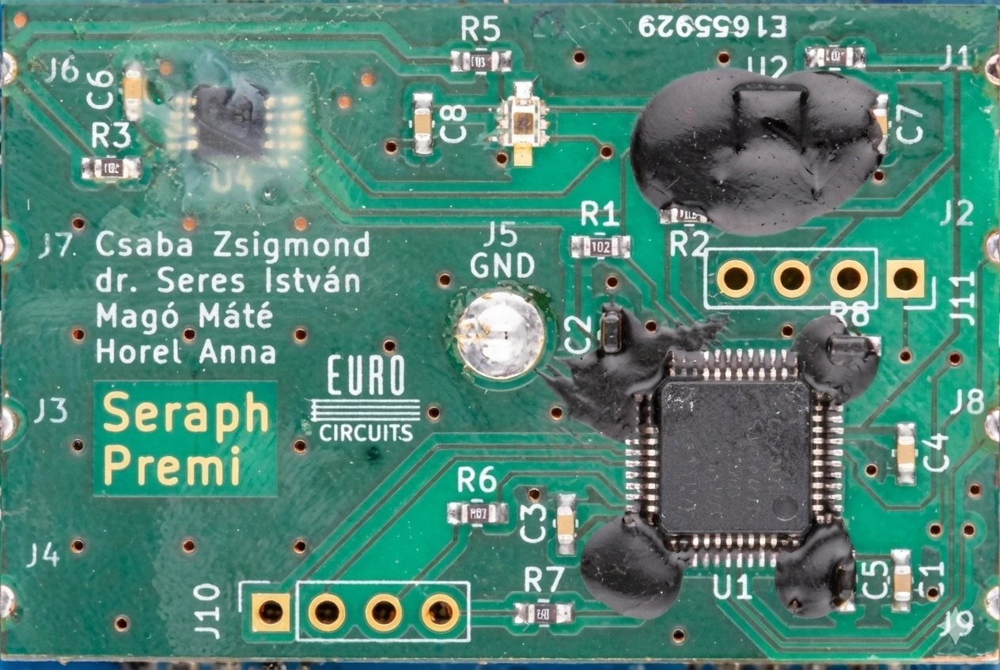
The experiment
What the board measures, what it is made of, and why two different epoxies cover the thermometers.
Read moreHUNITY satellite
The 3PQ PocketQube that carries Seraph: orbit, call sign, and where to follow it.
Read moreResults
What the data shows so far, and what we cannot claim from it yet.
Read more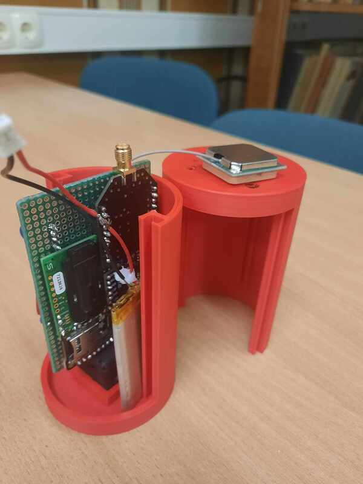
CanSat Hungary
Our 2024 competition satellite: air pressure, CO₂ and an AI that estimates green areas.
Read more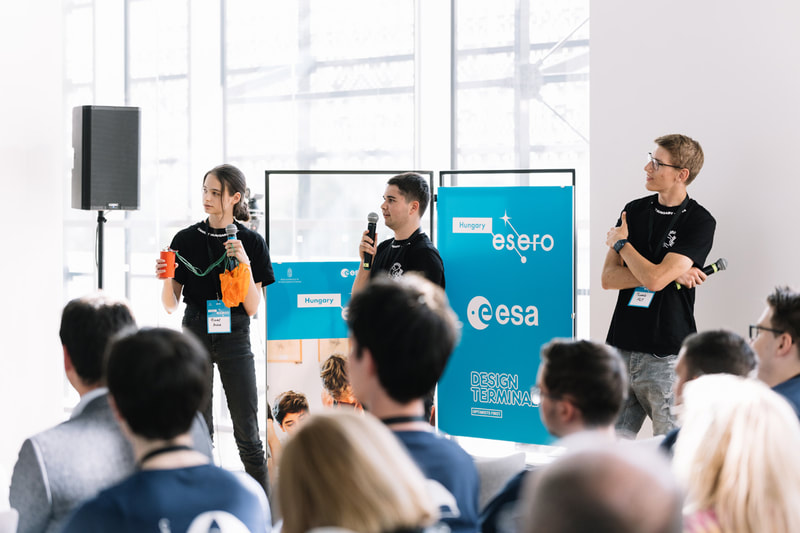
Timeline
Milestones and talks from the CanSat final to the H-SPACE conference.
Read moreTeam
Who worked on the CanSat and on the Seraph board, and where we study now.
Read morePhotos from our work
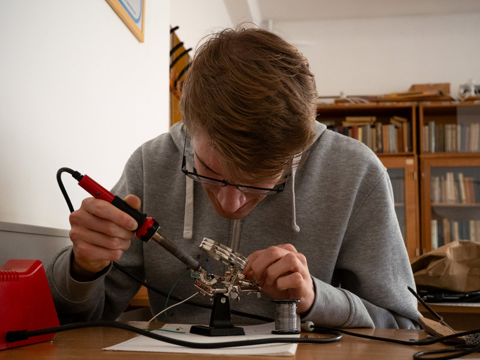
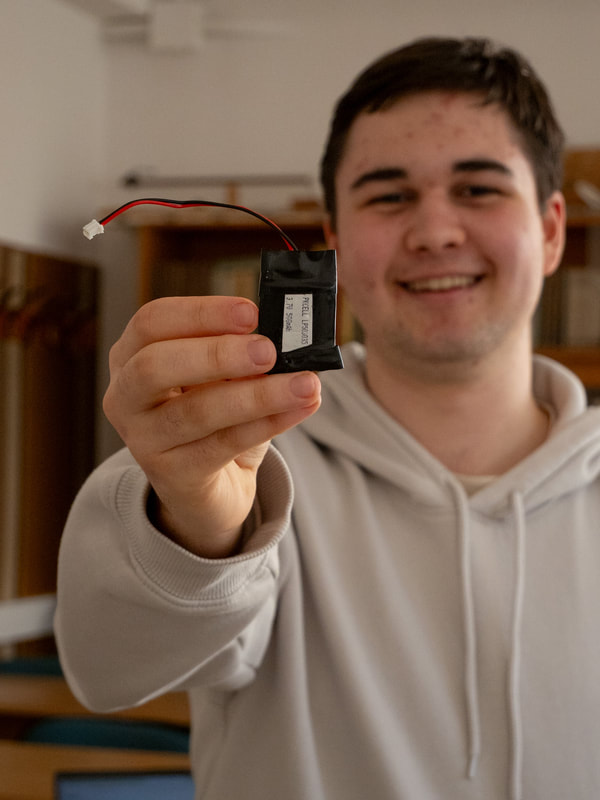
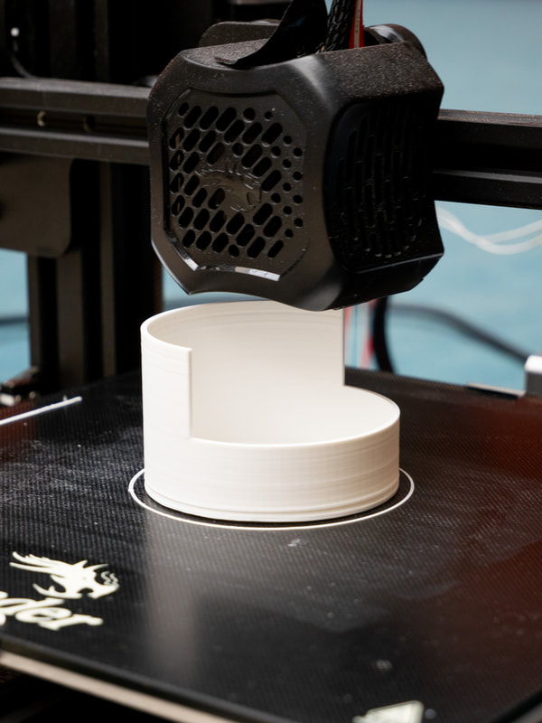
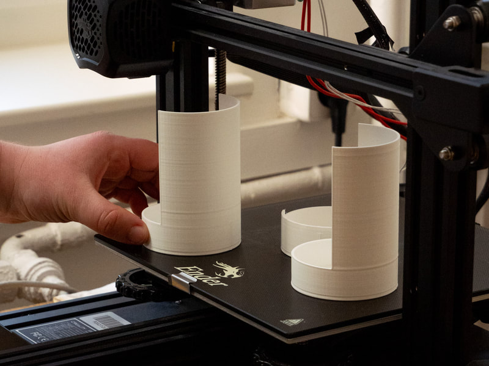
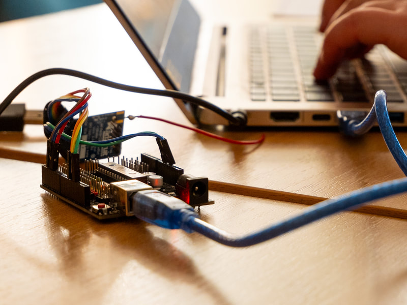
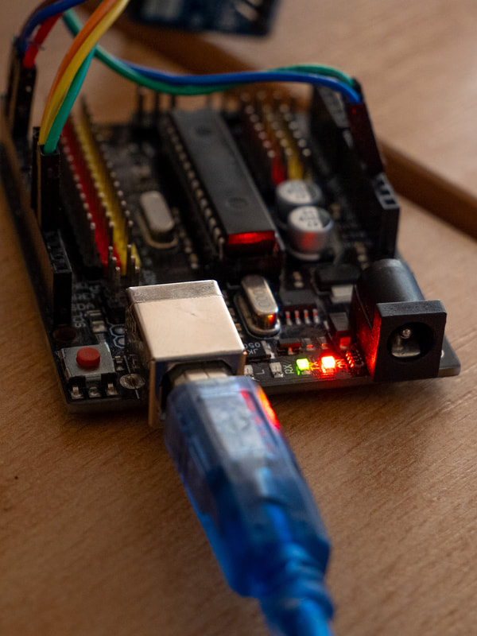
Photos: Anna Bencsik. More pictures on the CanSat page and on Instagram.
Our supporters
The CanSat project was supported by our school and by the Hungarian University of Agriculture and Life Sciences (MATE). The members of the HUNITY board team now study at the Faculty of Electrical Engineering and Informatics of the Budapest University of Technology and Economics (BME VIK).
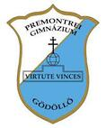
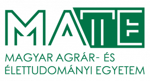